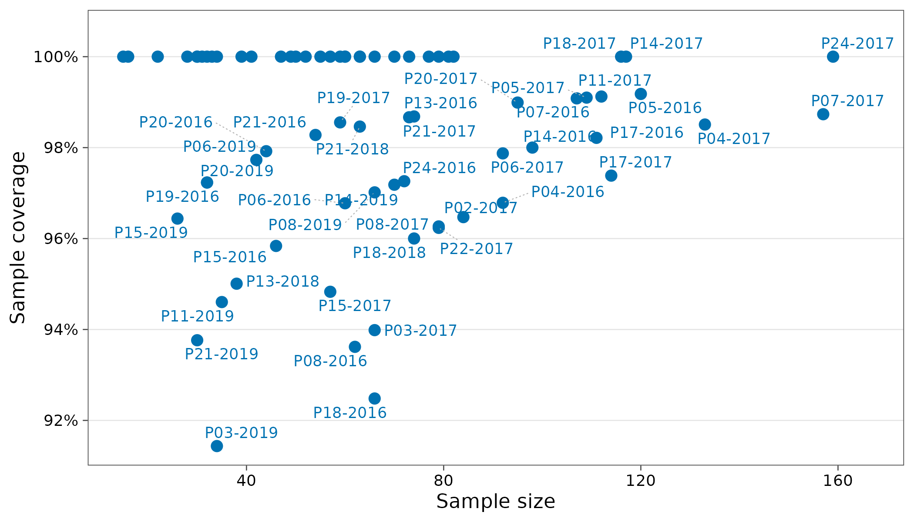
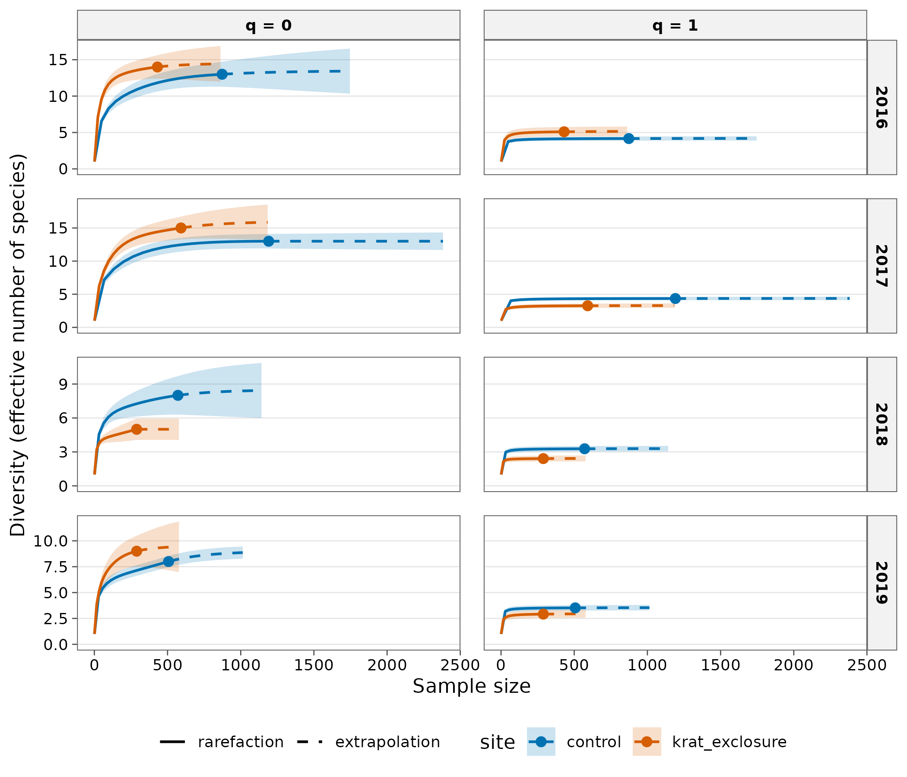
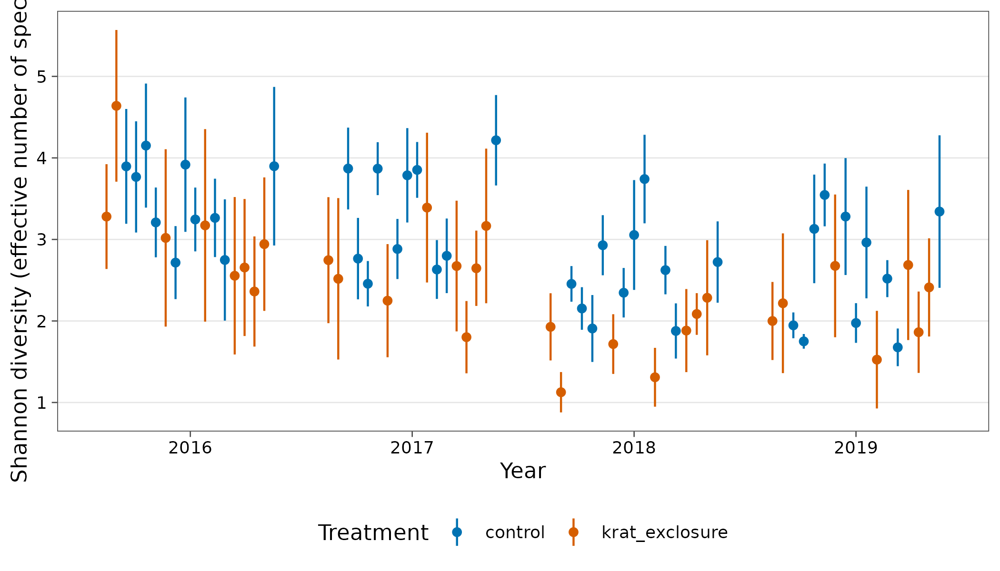
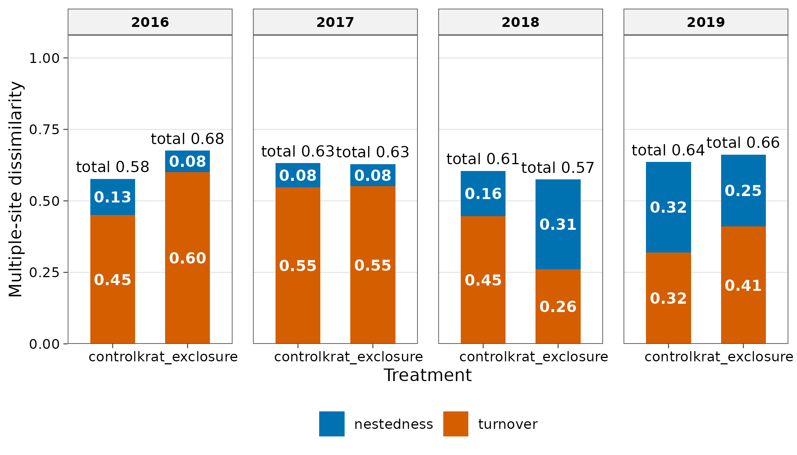

Case study: desert rodents under experimental exclosures
Source:vignettes/articles/case-mammals.Rmd
case-mammals.RmdThe Portal Project is a long-term experiment in the Chihuahuan
Desert, Arizona, where rodents have been live-trapped on 24 fenced plots
since 1977. Some plots are open to all rodents (controls), some exclude
kangaroo rats (Dipodomys) through small gates, and some exclude
every rodent. The bundled portal_rodents dataset holds
counts of identified rodents on each plot in each year from 2016 to
2019.
Source and licence. PortalData, released under CC0
1.0. Cite as Ernest et al. (2020), below. See
?portal_rodents and data-raw/portal_rodents.R
for how it was built.
library(tidydiversity)
library(dplyr)
library(ggplot2)
set.seed(2026)
portal_rodents
#> # A tibble: 491 × 7
#> site plot year treatment species scientific_name abundance
#> <chr> <int> <int> <fct> <chr> <chr> <int>
#> 1 P01-2016 1 2016 removal PM Peromyscus maniculatus 9
#> 2 P01-2016 1 2016 removal PE Peromyscus eremicus 8
#> 3 P01-2016 1 2016 removal RM Reithrodontomys megalotis 6
#> 4 P01-2016 1 2016 removal PP Chaetodipus penicillatus 5
#> 5 P01-2016 1 2016 removal PL Peromyscus leucopus 1
#> 6 P01-2017 1 2017 removal PP Chaetodipus penicillatus 16
#> 7 P01-2017 1 2017 removal OT Onychomys torridus 9
#> 8 P01-2017 1 2017 removal PL Peromyscus leucopus 8
#> 9 P01-2017 1 2017 removal PE Peromyscus eremicus 6
#> 10 P01-2017 1 2017 removal RM Reithrodontomys megalotis 5
#> # ℹ 481 more rows
count(distinct(portal_rodents, site, treatment), treatment)
#> # A tibble: 3 × 2
#> treatment n
#> <fct> <int>
#> 1 control 40
#> 2 krat_exclosure 32
#> 3 removal 24The removal plots catch very few animals by design, so diversity is compared between control and kangaroo rat exclosure plots.
rodents <- filter(portal_rodents, treatment != "removal")
plots <- distinct(rodents, site, plot, year, treatment)Sampling completeness
cov <- div_coverage(rodents)
autoplot(cov)
range(cov$coverage)
#> [1] 0.9143599 1.0000000Coverage is above 90% almost everywhere, so differences in trapping success matter far less than they would for raw species counts.
Curves for each treatment
Pooling plots within each treatment and year gives one curve per
treatment, with 95% bootstrap ribbons. Results computed with
.by are faceted by group automatically.
pooled <- rodents |>
mutate(site = treatment) |>
as_community(.by = year)
curves <- div_rarefy(pooled, q = c(0, 1), .by = year, nboot = 100)
autoplot(curves)
Plot-level diversity and a mixed model
Each plot is visited every year, so plot is a random effect. The coverage-standardised Shannon diversity of each plot-year is modelled against treatment and year, weighted by inverse variance. Plot-years with a single species have a standard error of zero and no finite weight, so they are dropped; weights are rescaled to a mean of one.
std <- div_standardise(rodents, q = 1, nboot = 100)
#> Warning: 5 sites cannot reach the target coverage: "P03-2019", "P11-2019", "P13-2018",
#> "P15-2017", and "P21-2019".
#> ℹ They are returned at their highest attainable coverage; compare coverage with
#> target, or use `level = "min_observed"`.
shannon <- std |>
tidy() |>
add_site_data(plots) |>
filter(!is.na(weight))
shannon
#> # A tibble: 70 × 14
#> site q m method target coverage estimate std.error conf.low
#> <chr> <dbl> <dbl> <chr> <dbl> <dbl> <dbl> <dbl> <dbl>
#> 1 P02-2016 1 25.8 rarefaction 0.955 0.955 3.28 0.328 2.64
#> 2 P02-2017 1 48.8 rarefaction 0.955 0.955 2.75 0.394 1.97
#> 3 P02-2018 1 10.8 rarefaction 0.955 0.955 1.93 0.210 1.52
#> 4 P02-2019 1 21.7 rarefaction 0.955 0.955 2.00 0.244 1.52
#> 5 P03-2016 1 33.6 rarefaction 0.955 0.955 4.64 0.475 3.71
#> 6 P03-2017 1 103. extrapolati… 0.955 0.955 2.52 0.505 1.53
#> 7 P03-2018 1 10.7 rarefaction 0.955 0.964 1.13 0.126 0.879
#> 8 P03-2019 1 55.3 extrapolati… 0.955 0.955 2.22 0.437 1.36
#> 9 P04-2016 1 64.4 rarefaction 0.955 0.955 3.90 0.359 3.19
#> 10 P04-2017 1 35.9 rarefaction 0.955 0.955 3.87 0.256 3.37
#> # ℹ 60 more rows
#> # ℹ 5 more variables: conf.high <dbl>, weight <dbl>, plot <int>, year <int>,
#> # treatment <fct>
library(lme4)
fit <- lmer(estimate ~ treatment + factor(year) + (1 | plot),
data = shannon, weights = weight / mean(weight)
)
summary(fit)$coefficients
#> Estimate Std. Error t value
#> (Intercept) 3.3119021 0.1993840 16.6106741
#> treatmentkrat_exclosure -0.5957986 0.2052048 -2.9034335
#> factor(year)2017 -0.1681186 0.2041168 -0.8236391
#> factor(year)2018 -0.8883447 0.1915441 -4.6378077
#> factor(year)2019 -1.0851290 0.1922227 -5.6451670
ggplot(shannon, aes(factor(year), estimate,
colour = treatment,
group = interaction(treatment, plot)
)) +
geom_pointrange(aes(ymin = conf.low, ymax = conf.high),
size = 0.25,
position = position_dodge(width = 0.8)
) +
scale_colour_tidydiversity() +
labs(
x = "Year", y = "Shannon diversity (effective number of species)",
colour = "Treatment"
) +
theme_tidydiversity()
In these years, Shannon diversity on kangaroo rat exclosures is lower than on controls, with a confidence interval for the treatment effect that excludes zero:
confint(fit, parm = "treatmentkrat_exclosure", method = "Wald")
#> 2.5 % 97.5 %
#> treatmentkrat_exclosure -0.9979926 -0.1936045Excluding the three Dipodomys species removes part of the community outright, and the remaining assemblage is dominated by the desert pocket mouse Chaetodipus penicillatus, so the effective number of species falls. Diversity also declined on both treatments from 2016 to 2019.
Beta diversity
Multi-site Sorensen dissimilarity among plots within each treatment and year, split into turnover and nestedness.
multi <- beta_multi(rodents, .by = c(treatment, year))
multi
#> # A tibble: 8 × 6
#> treatment year n_sites turnover nestedness total
#> <fct> <int> <int> <dbl> <dbl> <dbl>
#> 1 control 2016 10 0.45 0.127 0.577
#> 2 control 2017 10 0.547 0.0849 0.632
#> 3 control 2018 10 0.446 0.159 0.605
#> 4 control 2019 10 0.319 0.317 0.636
#> 5 krat_exclosure 2016 8 0.6 0.0757 0.676
#> 6 krat_exclosure 2017 8 0.551 0.0777 0.629
#> 7 krat_exclosure 2018 8 0.261 0.314 0.575
#> 8 krat_exclosure 2019 8 0.410 0.252 0.662
autoplot(multi, xlab = "Treatment")
Reporting
div_table(div_estimate(filter(pooled, year == 2019), nboot = 100),
digits = 1, output = "kable",
caption = "Asymptotic diversity by treatment, 2019"
)| site | Order q | Observed | Estimate [95% CI] |
|---|---|---|---|
| control | 0 | 8.0 | 9.0 [8.5, 9.8] |
| control | 1 | 3.5 | 3.6 [3.5, 3.8] |
| control | 2 | 2.8 | 2.9 [2.8, 3.1] |
| krat_exclosure | 0 | 9.0 | 9.5 [9.0, 22.4] |
| krat_exclosure | 1 | 2.9 | 3.0 [2.9, 3.4] |
| krat_exclosure | 2 | 1.9 | 2.0 [1.9, 2.2] |
References
Brown, J. H., Valone, T. J. and Curtin, C. G. (1997). Reorganization of an arid ecosystem in response to recent climate change. PNAS 94: 9729-9733.
Ernest, S. K. M., Yenni, G. M., Allington, G., et al. (2018). The Portal Project: a long-term study of a Chihuahuan desert ecosystem. bioRxiv. https://doi.org/10.1101/332783